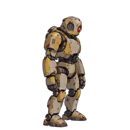

Eski Muhafız Robot
Makine
Genel Bakış
| HP'ye (yazıldığı gibi) kadar yükseltir | 36 |
|---|---|
| Saldırı oranı | x1.25 |
| Hız | Her turda bir etki eder |
| Hareket | Yer |
| Davranış | Kahramanı kovalar |
| İhbar mesafesi | 6 |
| Şurada göründü | Sahne 71 - Sahne 90 |
| Ekstra arazi | Yok |
| Traktörler |
|
Üzerinde çalışmayan tuzaklar
Yalnızca tuzak verilerinden türetilmiştir (hareket türü, yok sayılan özellikler ve düşman ailesinin bağışıklığı). Boss özel kuralları ve tuzak seviyeleri dikkate alınmaz.
| Trap | Sebep |
|---|---|
| Her etki, bu düşman ailesinin bağışık olduğu bir etkidir | |
| Yalnızca belirli düşman aileleri veya hareket üzerinde çalışır türler | |
| Her etki, bu düşman ailesinin bağışık olduğu bir etkidir | |
| Yer | |
| Yer | |
| Yalnızca belirli düşman aileleri veya hareket üzerinde çalışır türler |